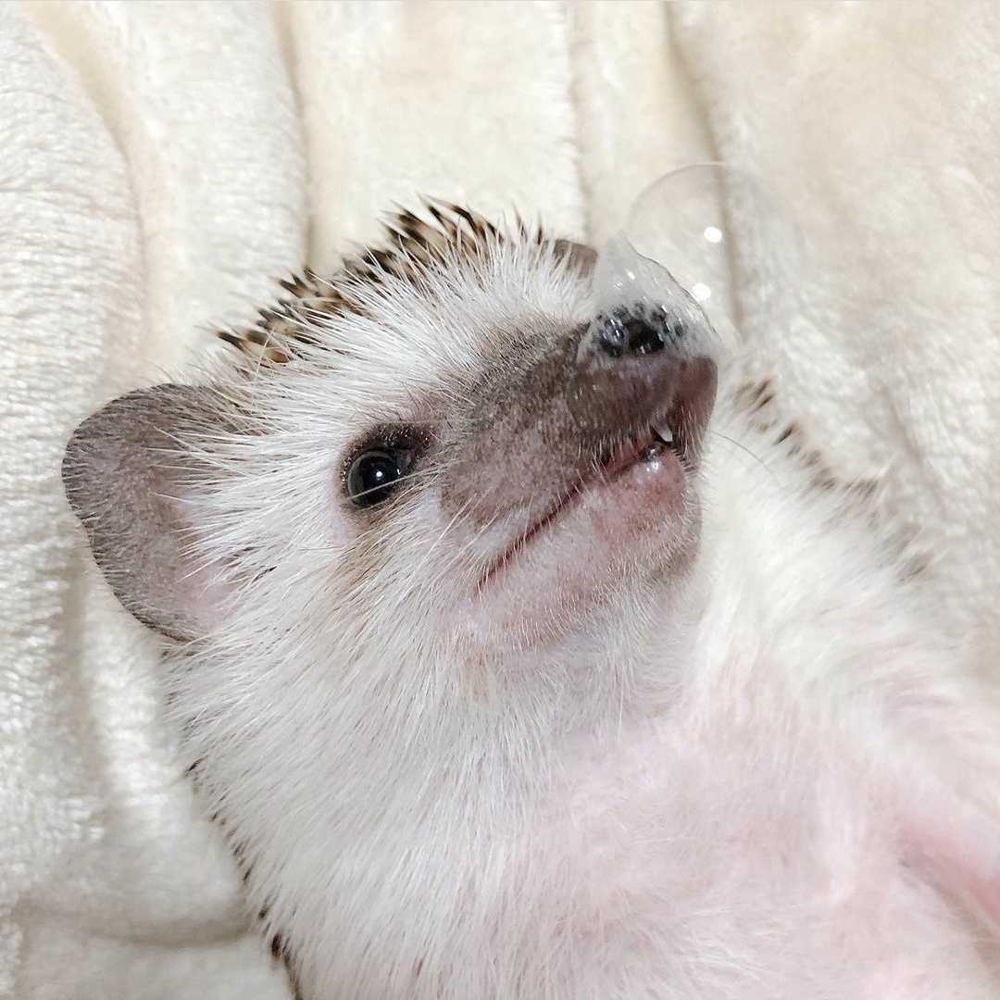

애니
나만이 없는 거리
이별의 아침에 약속의 꽃을 장식하자
울고싶은 나는 고양이 가면을 쓴다
나
만이 없는 거리

지금보다 더 커서
혼자서 어디든지 갈 수 있게되면
먼 나라에 가 보고 싶다
먼 섬에 가 보고싶다
힘든 일도 슬픈 일도 없는 섬에 가 보고 싶다
그 섬에서 나는
오르고 싶을 때 나무에 오르고
헤엄치고 싶을 때 바다에서 헤엄치고
자고 싶을 때 잔다
나는 나만이 없는 거리를 생각하면
마음이 가벼워 진다
멀리 저 멀리 가고 싶다.